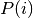
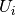
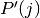
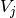
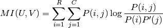

sklearn.metrics.mutual_info_score¶
- sklearn.metrics.mutual_info_score(labels_true, labels_pred, contingency=None)¶
Mutual Information between two clusterings
The Mutual Information is a measure of the similarity between two labels of the same data. Where  is the probability of a random sample occurring in cluster  and  is the probability of a random sample occurring in cluster , the Mutual Information between clusterings
 and
and  is given as:
is given as:
This is equal to the Kullback-Leibler divergence of the joint distribution with the product distribution of the marginals.
This metric is independent of the absolute values of the labels: a permutation of the class or cluster label values won’t change the score value in any way.
This metric is furthermore symmetric: switching label_true with label_pred will return the same score value. This can be useful to measure the agreement of two independent label assignments strategies on the same dataset when the real ground truth is not known.
Parameters: labels_true : int array, shape = [n_samples]
A clustering of the data into disjoint subsets.
labels_pred : array, shape = [n_samples]
A clustering of the data into disjoint subsets.
contingency: None or array, shape = [n_classes_true, n_classes_pred] :
A contingency matrix given by the contingency_matrix function. If value is None, it will be computed, otherwise the given value is used, with labels_true and labels_pred ignored.
Returns: mi: float :
Mutual information, a non-negative value
See also
- adjusted_mutual_info_score
- Adjusted against chance Mutual Information
- normalized_mutual_info_score
- Normalized Mutual Information